配置路线（51 个任务）
教材 IMG 路径 + 手顺 + 原始画面，按 A–H 八组整理
教材 PP 模块的 51 个任务按 A–H 八组整理在本页：每组给出「这一组在干什么」，每个任务给出 IMG 路径 + 手顺步骤 + 原书画面 + 一句话要点。页面上的路径和截图都是从教材数据直接渲染的，没有手抄 —— 可以拿它当后台配置的作业单。
① 先按 组织 / 主数据 理解每个任务「为什么要做」；② 再照本页的 IMG 路径在自己的系统里点进去做；③ 做一步存一步，用任务号（t01…t51）当作业编号对进度。
提示：截图是教材环境的画面（中文 SAP GUI），你的系统里字段顺序可能略有不同 —— 以路径和字段名为准，不要背画面位置。另外 PP 的配置任务之间前后依赖很强（能力先于工作中心、控制码先于工艺路线、BOM/工艺路线先于成本核算），跳着做很容易在很后面才报错。
| 组 | 内容 | 任务数 | 任务号 |
|---|---|---|---|
| A 生产基础参数（排程、调度员、订单类型、确认） | 先把「生产怎么排程、谁负责、确认怎么做」这套参数立起来：生产计划参数文件、生产调度员、排程相关参数、订单类型相关参数、确认参数。这一组全是后台参数，改一处会影响所有生产订单。 | 5 | 01, 02, 03, 04, 05 |
| B 物料清单与工作中心（BOM、能力、工作中心） | PP 的两大主数据基础：先用 CS01 建 BOM（MRP 展开的基础），用 CS15 反查用途；再定义工作中心负责人、控制码，然后建人工工时与机器工时能力，最后建六个工作中心。顺序很重要：能力先于工作中心，控制码先于工艺路线。 | 8 | 06, 07, 08, 09, 10, 11, 12, 13 |
| C 工艺路线与产成品计划视图 | 把工序串起来：CA01 建标准工艺路线（含并行顺序与组件分配）、CA02 拆分工序，最后用 MMF1 补上产成品的生产计划视图（MM 阶段没有维护它）。 | 3 | 14, 15, 16 |
| D 产品成本核算配置 | 标准成本的三块拼图：成本构成结构 Z1、估价变式与日期控制、数量结构控制 PC01，最后组合成一个可用的成本核算变式。没配齐，CK11N 会直接报错。 | 5 | 17, 18, 19, 20, 21 |
| E 标准成本估算与价格更新 | CK11N 算成本 → CK24 标记未来价格 → CK24 发布更新标准价 → 用 MM03 前后各核对一次。这一组是「事前成本」，也是 PP 与 CO 最直观的集成。 | 5 | 22, 23, 24, 25, 26 |
| F 实际成本与可用性检查 | 为订单的「事后成本」做准备：实际成本估价变式、在制品结果分析版本；再配可用性检查的检查组、检查范围、检查控制；最后用 MM02 维护物料的计划策略组。 | 6 | 27, 28, 29, 30, 31, 32 |
| G 需求计划与 MRP 运行 | 业务的起点到转换：MD61 建独立需求 → MD05/MD04 看供需 → MD02 运行 MRP → MD04 里把计划订单转生产订单、采购申请转采购订单 → COOIS 看订单清单。 | 7 | 33, 34, 35, 36, 37, 38, 39 |
| H 生产执行、采购收货与结算 | 一遍完整的生产：采购收货 → 发票校验（含 MRBR 下达）→ 下达生产订单 → 发料 261 → 工单确认 → 产成品收货 → 看订单成本 → 技术性完成 → KO88 结算 → 成本报表 → MD04 复核库存 → MB1B 移库。 | 12 | 40, 41, 42, 43, 44, 45, 46, 47, 48, 49, 50, 51 |
A 生产基础参数（排程、调度员、订单类型、确认） 5 个任务
先把「生产怎么排程、谁负责、确认怎么做」这套参数立起来：生产计划参数文件、生产调度员、排程相关参数、订单类型相关参数、确认参数。这一组全是后台参数，改一处会影响所有生产订单。
定义生产计划参数文件
生产计划 参数文件可以分配给物料（物料主数据中的工作排程屏幕）或者生产计划员
（后台配置）。其中分配给物料主数据的生产计划参数文件具有更高的优先级。在创建生产订单时生产计划参数将复制生产订单或流程订单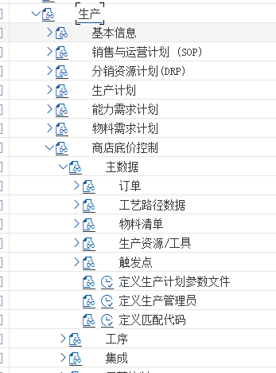
画面 1教材《S4.docx》· PP 任务 01 定义生产计划参数文件 · 原图 01_1_image777.png 原书提示点击进入
画面 2教材《S4.docx》· PP 任务 01 定义生产计划参数文件 · 原图 02_1_image778.png 说明解释：采用复制的方法，复制 1000 工厂，000001 生产计划参数文件。
定义生产调度员
通过在物料主数据中将生产调度员分配给物料，我们可以定义在生产作业控制中对某种物料的责任归属
生产－商店底价控制－主数据－定义生产调度员
画面 3教材《S4.docx》· PP 任务 02 定义生产调度员 · 原图 01_1_image783.png 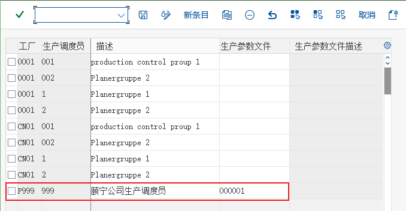
画面 4教材《S4.docx》· PP 任务 02 定义生产调度员 · 原图 01_2_image784.png 原书提示点击新条目，进入原书提示P999 | 999| 生产调度员颐宁 | 000001
维护和生产排程相关的生产订单参数
生产－商店底价控制－工序－计划－为生产订单定义计划参数

画面 5教材《S4.docx》· PP 任务 03 维护和生产排程相关的生产订单参数 · 原图 01_1_image787.png 维护的这些参数将影响生产订单排程的各种操作和计算

画面 6教材《S4.docx》· PP 任务 03 维护和生产排程相关的生产订单参数 · 原图 02_1_image788.png 点击新条目
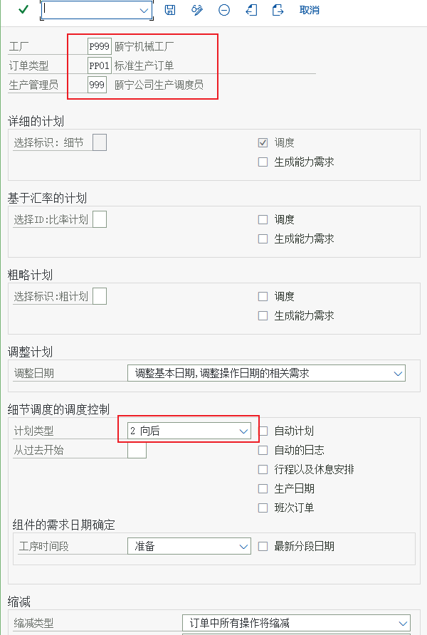
画面 7教材《S4.docx》· PP 任务 03 维护和生产排程相关的生产订单参数 · 原图 03_1_image789.png
维护和订单类型相关的生产订单参数
维护的这些参数将影响生产订单排程的各种操作和计算

画面 8教材《S4.docx》· PP 任务 04 维护和订单类型相关的生产订单参数 · 原图 01_1_image790.png 
画面 9教材《S4.docx》· PP 任务 04 维护和订单类型相关的生产订单参数 · 原图 01_2_image791.png 点击新条目
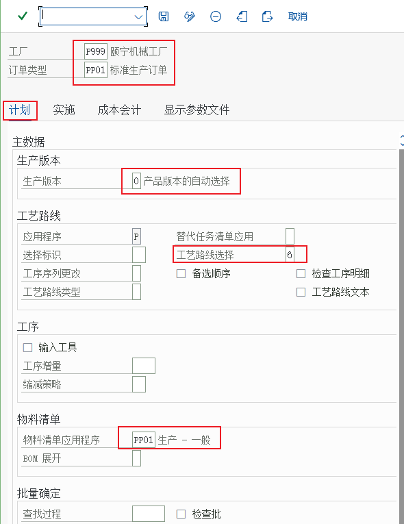
画面 10教材《S4.docx》· PP 任务 04 维护和订单类型相关的生产订单参数 · 原图 02_1_image792.png 原书中结果分析码为FERT
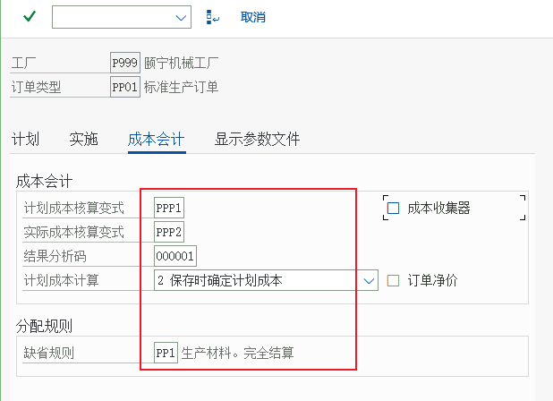
画面 11教材《S4.docx》· PP 任务 04 维护和订单类型相关的生产订单参数 · 原图 03_1_image793.png
维护和确认相关的生产订单参数
确认是生产订单管理中的一项工作，它既可以是针对整个订单的，也可以是针对工序的，它是由负责人员认可或填写订单的产出、时间等信息，并由系统执行检查、倒冲等操作的过程。
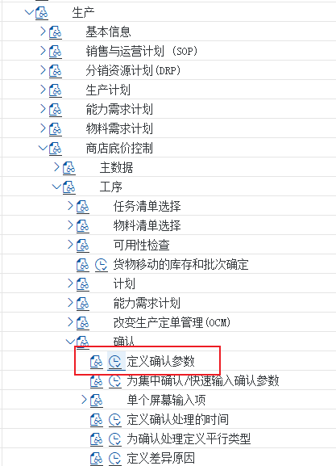
画面 12教材《S4.docx》· PP 任务 05 维护和确认相关的生产订单参数 · 原图 01_1_image794.png 
画面 13教材《S4.docx》· PP 任务 05 维护和确认相关的生产订单参数 · 原图 02_1_image795.png 点击新条目
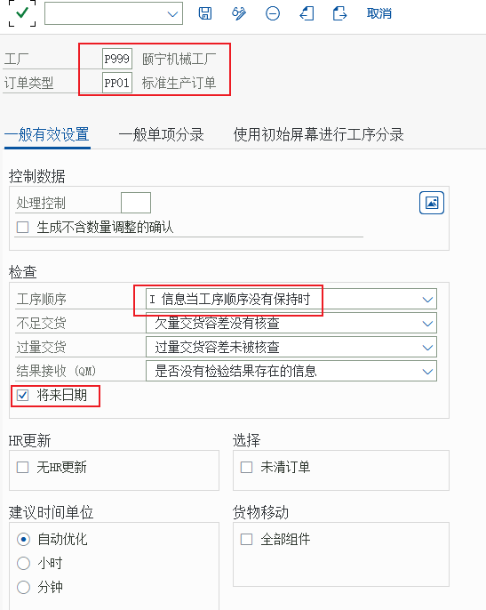
画面 14教材《S4.docx》· PP 任务 05 维护和确认相关的生产订单参数 · 原图 03_1_image796.png
B 物料清单与工作中心（BOM、能力、工作中心） 8 个任务
PP 的两大主数据基础：先用 CS01 建 BOM（MRP 展开的基础），用 CS15 反查用途；再定义工作中心负责人、控制码，然后建人工工时与机器工时能力，最后建六个工作中心。顺序很重要：能力先于工作中心，控制码先于工艺路线。
新建物料清单
CS01后勤－生产－主数据－物料清单－物料 BOM — CS01 新建

画面 15教材《S4.docx》· PP 任务 06 新建物料清单 · 原图 01_1_image797.png 
画面 16教材《S4.docx》· PP 任务 06 新建物料清单 · 原图 02_1_image798.png 项目类别都用L,库存项目
录入 上述数据，点击保存即可
画面 17教材《S4.docx》· PP 任务 06 新建物料清单 · 原图 03_1_image799.jpeg
显示物料所用处清单
CS15后勤－生产－主数据－物料清单－报告－调用清单—所用处清单 CS15-物料

画面 18教材《S4.docx》· PP 任务 07 显示物料所用处清单 · 原图 01_1_image800.png 
画面 19教材《S4.docx》· PP 任务 07 显示物料所用处清单 · 原图 02_1_image801.png 点击下一屏，如下图所示

画面 20教材《S4.docx》· PP 任务 07 显示物料所用处清单 · 原图 03_1_image802.png 点击 F8 运行，如下

画面 21教材《S4.docx》· PP 任务 07 显示物料所用处清单 · 原图 04_1_image803.png 原书提示这个报告显示了罩壳被用于物料 F999-100 的生产中
定义工作中心负责人
解释：颐宁公司有 “ 物料准备”，“ 切割” 这样一些工作中心，生产产成品 “ 铸钢泵 170-230 ” 需要以一定的次序在这些工作中心执行各道工序，SAP 称之为“工艺路线”。这些我们在之后维护。本步骤中，我们需要为各工作中心在后台定义一些负责人，这些负责人都会分配到工作中心的主数据中。为简化，我们只定义了一个工作中心负责人。
生产－基本数据－工作中心－通用数据－确定负责人
画面 22教材《S4.docx》· PP 任务 08 定义工作中心负责人 · 原图 01_1_image804.png 
画面 23教材《S4.docx》· PP 任务 08 定义工作中心负责人 · 原图 02_1_image805.png 原书提示点击新条目，P999 999 颐宁工作中心负责人

画面 24教材《S4.docx》· PP 任务 08 定义工作中心负责人 · 原图 03_1_image806.png
定义工作中心的控制码
解释：这个控制码控制着工艺路线中的某个工序需要执行的业务功能，以及 SAP 如何处理这个工序。比如这个工序是否需要排程、是否需要产生产能需求、是否需要打印公票、是否需要返工工序、是否需要计算成本、是否和如何进行确认、是内部还是外部处理。
生产－基本数据－工作中心－工艺路径数据－定义控制码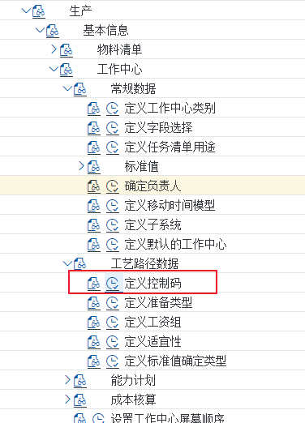
画面 25教材《S4.docx》· PP 任务 09 定义工作中心的控制码 · 原图 01_1_image807.png 
画面 26教材《S4.docx》· PP 任务 09 定义工作中心的控制码 · 原图 02_1_image808.png 控制码 ZKM1 颐宁工作中心控制码调度

画面 27教材《S4.docx》· PP 任务 09 定义工作中心的控制码 · 原图 03_1_image809.png 原书提示确定能力需求 成本原书提示确认 2 确认可能但不必需
新建人工工时能力
CR11解释：颐宁公司的各人工工作中心的资源是共享的，它们的生产能力是可以调配使用的，所以我们在这个步骤将统一核算整个工厂的人工工时能力，在后面的步骤中，当新建人工工时类别的工作中心时，我们将通用人工工时能力分配给它们。当然能力也可以定义在工作中心这一层。
后勤－生产－主数据－工作中心－能力－CR11-创建
画面 28教材《S4.docx》· PP 任务 10 新建人工工时能力 · 原图 01_1_image810.png 
画面 29教材《S4.docx》· PP 任务 10 新建人工工时能力 · 原图 01_2_image811.png Labor 只是定义，002 是工时

画面 30教材《S4.docx》· PP 任务 10 新建人工工时能力 · 原图 02_1_image814.png 原书提示单项能力数量，指能分割使用的单项能力有 10 个。比如，如果颐宁公司总是以班组为单位管理的，这里就是班组的数量。如果是以单个工人调配的，那这里就是工人的数量。这里需要和后面工艺路线的定义保持定义上的一致。原书提示能力利用 100 指 100%能有效利用。原书提示和有限计划有关。指在作有限排程的时候，系统需要将这种能力的可用数量和负载数量考虑进去。只有这里打勾的能力才会在能力可用性检查中被考虑。
新建机器工时能力
CR11解释：和人工工时能力类似，颐宁公司的各机器工作中心的资源也是共享的。后勤－生产－主数据－工作中心－能力－CR11-创建

画面 31教材《S4.docx》· PP 任务 11 新建机器工时能力 · 原图 01_1_image815.png 
画面 32教材《S4.docx》· PP 任务 11 新建机器工时能力 · 原图 02_1_image816.png
新建人工工时类别工作中心
CR01KP26后勤－生产－主数据－工作中心－工作中心－CR01-创建

画面 33教材《S4.docx》· PP 任务 12 新建人工工时类别工作中心 · 原图 01_1_image817.png 
画面 34教材《S4.docx》· PP 任务 12 新建人工工时类别工作中心 · 原图 01_2_image818.png 回车后如下所示

画面 35教材《S4.docx》· PP 任务 12 新建人工工时类别工作中心 · 原图 02_1_image819.png 
画面 36教材《S4.docx》· PP 任务 12 新建人工工时类别工作中心 · 原图 02_2_image820.png 将工时选择为必须维护

画面 37教材《S4.docx》· PP 任务 12 新建人工工时类别工作中心 · 原图 03_1_image821.png 原书提示点击默认值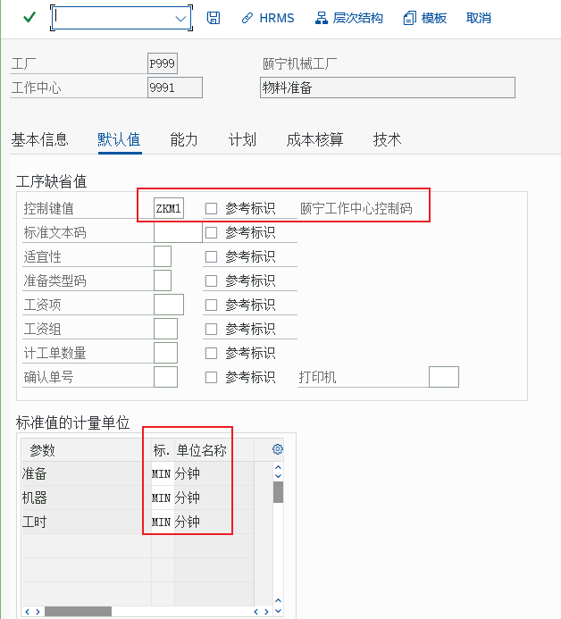
画面 38教材《S4.docx》· PP 任务 12 新建人工工时类别工作中心 · 原图 04_1_image822.png ZKM1 是我们在之前定义的缺省控制码
MIN 是指分钟点击调度
画面 39教材《S4.docx》· PP 任务 12 新建人工工时类别工作中心 · 原图 05_1_image823.png 点击成本核算

画面 40教材《S4.docx》· PP 任务 12 新建人工工时类别工作中心 · 原图 06_1_image824.png 此处活动类型由于在 CO 模块未完成 KP26，故无法继续接下来定义切割

画面 41教材《S4.docx》· PP 任务 12 新建人工工时类别工作中心 · 原图 07_1_image825.png 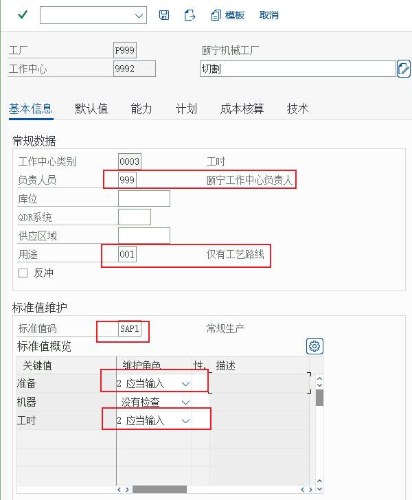
画面 42教材《S4.docx》· PP 任务 12 新建人工工时类别工作中心 · 原图 08_1_image826.png 
画面 43教材《S4.docx》· PP 任务 12 新建人工工时类别工作中心 · 原图 09_1_image827.png 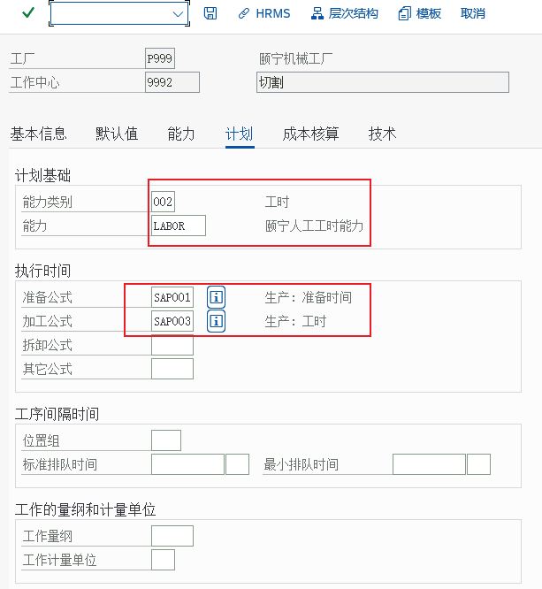
画面 44教材《S4.docx》· PP 任务 12 新建人工工时类别工作中心 · 原图 10_1_image828.png 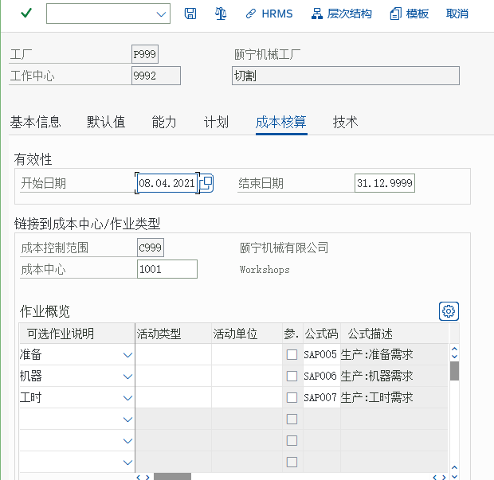
画面 45教材《S4.docx》· PP 任务 12 新建人工工时类别工作中心 · 原图 11_1_image829.png 
画面 46教材《S4.docx》· PP 任务 12 新建人工工时类别工作中心 · 原图 12_1_image830.png 
画面 47教材《S4.docx》· PP 任务 12 新建人工工时类别工作中心 · 原图 12_2_image831.png 9995 装配

画面 48教材《S4.docx》· PP 任务 12 新建人工工时类别工作中心 · 原图 13_1_image832.png 
画面 49教材《S4.docx》· PP 任务 12 新建人工工时类别工作中心 · 原图 14_1_image833.png 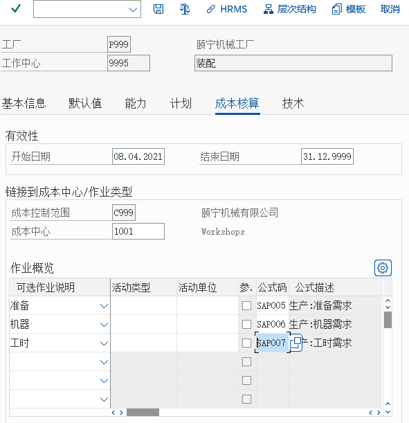
画面 50教材《S4.docx》· PP 任务 12 新建人工工时类别工作中心 · 原图 15_1_image834.png 
画面 51教材《S4.docx》· PP 任务 12 新建人工工时类别工作中心 · 原图 16_1_image835.png 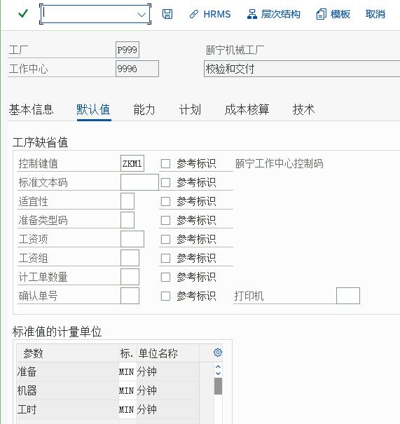
画面 52教材《S4.docx》· PP 任务 12 新建人工工时类别工作中心 · 原图 16_2_image836.png 
画面 53教材《S4.docx》· PP 任务 12 新建人工工时类别工作中心 · 原图 16_3_image837.png 9996 校验和交付

画面 54教材《S4.docx》· PP 任务 12 新建人工工时类别工作中心 · 原图 17_1_image838.png
新建机器工时类别工作中心
CR01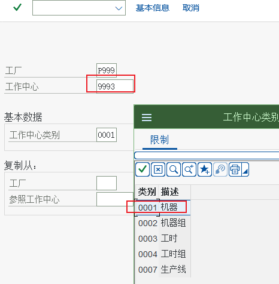
画面 55教材《S4.docx》· PP 任务 13 新建机器工时类别工作中心 · 原图 01_1_image839.png 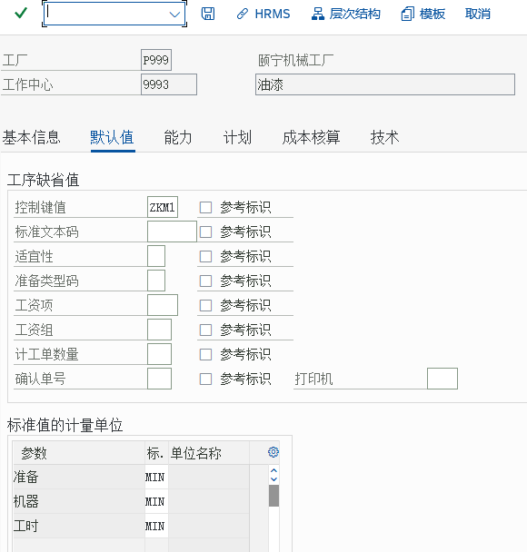
画面 56教材《S4.docx》· PP 任务 13 新建机器工时类别工作中心 · 原图 02_1_image840.png 
画面 57教材《S4.docx》· PP 任务 13 新建机器工时类别工作中心 · 原图 02_2_image841.png 
画面 58教材《S4.docx》· PP 任务 13 新建机器工时类别工作中心 · 原图 02_3_image842.png 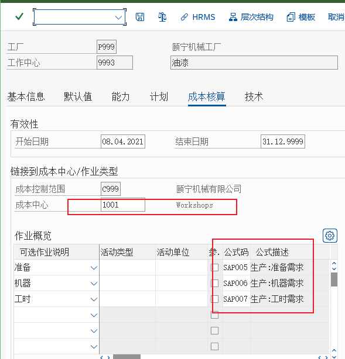
画面 59教材《S4.docx》· PP 任务 13 新建机器工时类别工作中心 · 原图 03_1_image843.png 
画面 60教材《S4.docx》· PP 任务 13 新建机器工时类别工作中心 · 原图 04_1_image844.png 原书提示创建预装配工作中心 9994
画面 61教材《S4.docx》· PP 任务 13 新建机器工时类别工作中心 · 原图 05_1_image845.png 
画面 62教材《S4.docx》· PP 任务 13 新建机器工时类别工作中心 · 原图 05_2_image846.png 
画面 63教材《S4.docx》· PP 任务 13 新建机器工时类别工作中心 · 原图 05_3_image847.png 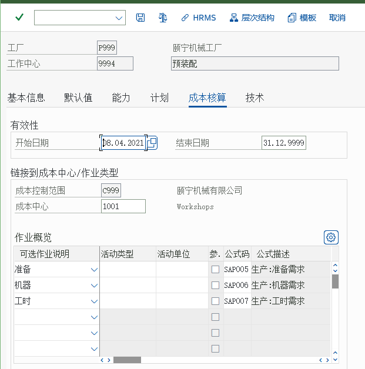
画面 64教材《S4.docx》· PP 任务 13 新建机器工时类别工作中心 · 原图 06_1_image848.png
C 工艺路线与产成品计划视图 3 个任务
把工序串起来：CA01 建标准工艺路线（含并行顺序与组件分配）、CA02 拆分工序，最后用 MMF1 补上产成品的生产计划视图（MM 阶段没有维护它）。
新建工艺路线
CA01解释：颐宁公司有 “ 物料准备”，“ 切割”，“ 装配”，“ 校验和交付” 这样四个以人工工时为主的工作中心。
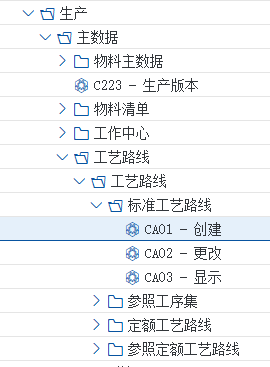
画面 65教材《S4.docx》· PP 任务 14 新建工艺路线 · 原图 01_1_image849.png 
画面 66教材《S4.docx》· PP 任务 14 新建工艺路线 · 原图 01_2_image850.png 
画面 67教材《S4.docx》· PP 任务 14 新建工艺路线 · 原图 02_1_image851.png 原书提示00109991P999ZKM1准备罩壳和金属片00209992P999ZKM1切割金属片00309994P999ZKM1预装配00409995P999ZKM1装配00509996P999ZKM1检验和交付00109991P999ZKM1准备罩壳和金属片00209992P999ZKM1切割金属片00309994P999ZKM1预装配00409995P999ZKM1装配00509996P999ZKM1检验和交付状态 4 指可以进行各项业务点击工序组计数器：SAP 中工艺路线是通过组编码和组计数器两者来编号的。组计数器可以定义一个产品的多条工艺路线。比如当不同的批量大小时可以用不同的工艺路线。我们这里只维护一条工艺路线。
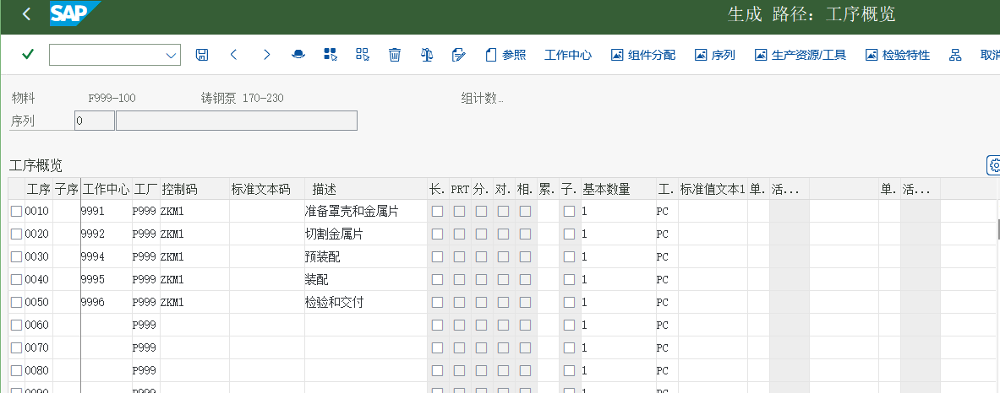
画面 68教材《S4.docx》· PP 任务 14 新建工艺路线 · 原图 03_1_image852.png 点击回车后，或者双击 0010 工序后
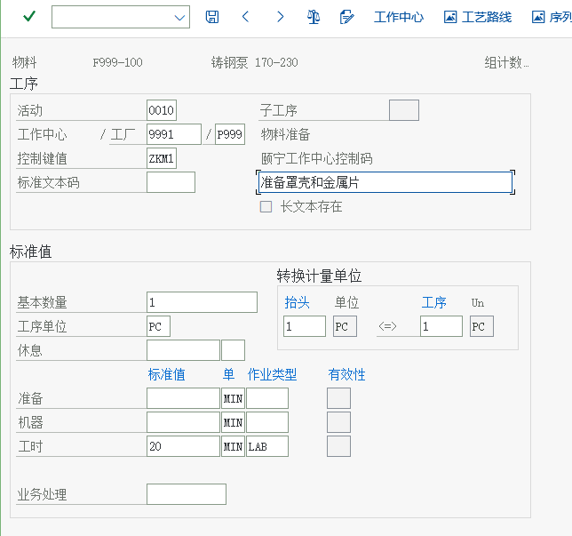
画面 69教材《S4.docx》· PP 任务 14 新建工艺路线 · 原图 04_1_image853.png 原书提示由于前序未将 LAB 与工作中心关联，此处会提示
画面 70教材《S4.docx》· PP 任务 14 新建工艺路线 · 原图 05_1_image854.png 点击顺序

画面 71教材《S4.docx》· PP 任务 14 新建工艺路线 · 原图 06_1_image855.png 
画面 72教材《S4.docx》· PP 任务 14 新建工艺路线 · 原图 07_1_image856.png 解释：我们看到现在我们为工艺路线定义了一条“标准顺序”，也就是刚才各道工序。但是在生产“铸钢泵 170-300”的过程中，“ 油漆罩壳”的工序是和上面的切割金属片并行的。下面我们来定义这个并行的顺序。点击新建按钮

画面 73教材《S4.docx》· PP 任务 14 新建工艺路线 · 原图 08_1_image857.png 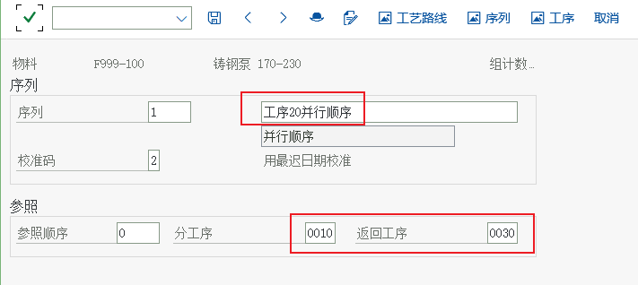
画面 74教材《S4.docx》· PP 任务 14 新建工艺路线 · 原图 09_1_image858.png 回车后

画面 75教材《S4.docx》· PP 任务 14 新建工艺路线 · 原图 10_1_image859.png 分工序 10 指完成 0010 工序后开始该并行作业
返回工序指完成该并行工序后，返回 0030 工序点击序列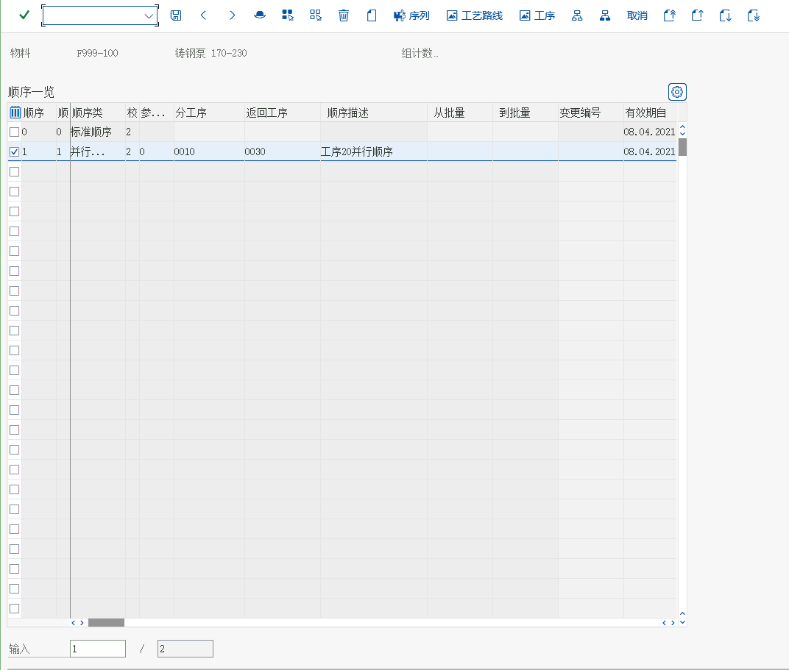
画面 76教材《S4.docx》· PP 任务 14 新建工艺路线 · 原图 11_1_image860.png 0010 9993 P999 ZKM1 油漆罩壳

画面 77教材《S4.docx》· PP 任务 14 新建工艺路线 · 原图 12_1_image861.png 我们看到已经新建了个并行顺序，下面来具体定义该并行顺序选中“顺序 1”行，点击工序
双击行项目，工序为0010，或者回车
画面 78教材《S4.docx》· PP 任务 14 新建工艺路线 · 原图 13_1_image862.png 点击组件分配
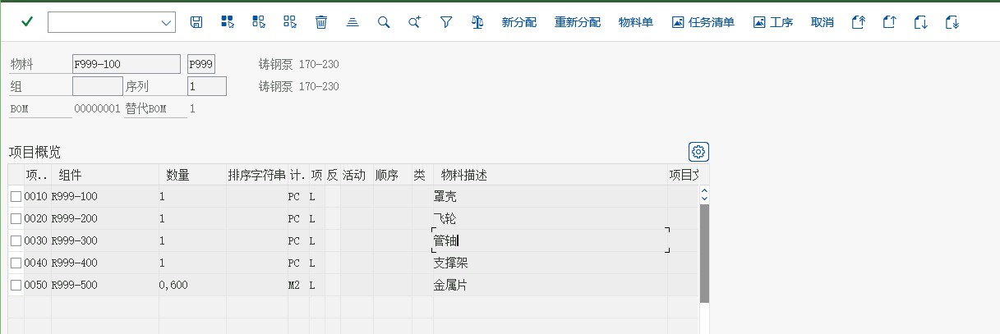
画面 79教材《S4.docx》· PP 任务 14 新建工艺路线 · 原图 14_1_image863.jpeg 说明解释：定义完工序，下面我们来定义各种原料分别在哪个工序投料。这个屏幕是该产品的BOM 组件
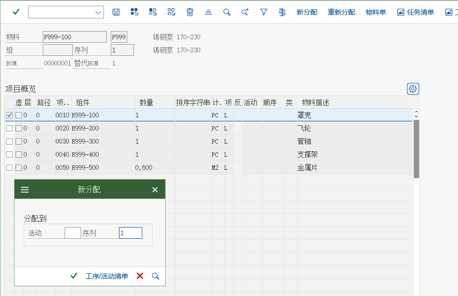
画面 80教材《S4.docx》· PP 任务 14 新建工艺路线 · 原图 15_1_image864.png 解释：我们可以直接填入投料的工序，也可以从清单中选择工序点击工序活动清单

画面 81教材《S4.docx》· PP 任务 14 新建工艺路线 · 原图 16_1_image865.png 从屏幕可以看出，工序 20 和工序 10 是平行的。选择工序 10，点击确认
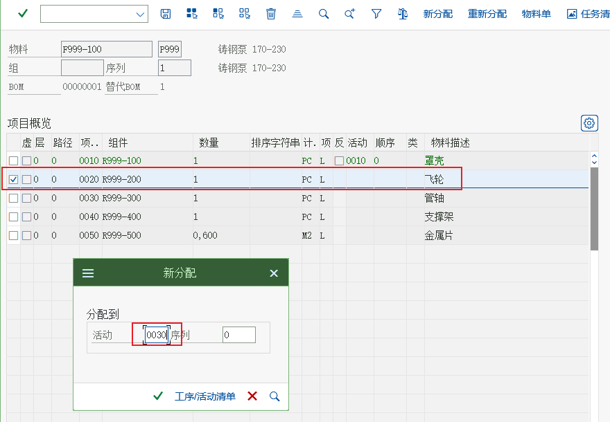
画面 82教材《S4.docx》· PP 任务 14 新建工艺路线 · 原图 17_1_image866.png 说明解释：继续物料的分配，最终结果如下，最后点击保存
画面 83教材《S4.docx》· PP 任务 14 新建工艺路线 · 原图 18_1_image867.png 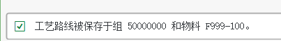
画面 84教材《S4.docx》· PP 任务 14 新建工艺路线 · 原图 19_1_image868.png
拆分工序
CA02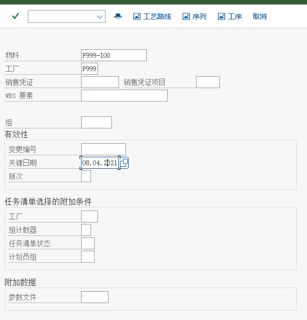
画面 85教材《S4.docx》· PP 任务 15 拆分工序 · 原图 01_1_image869.png 后勤－生产－主数据－工艺路线－工艺路线—标准工艺路线－CA02-更改
点击工序进入如下页面
画面 86教材《S4.docx》· PP 任务 15 拆分工序 · 原图 02_1_image870.jpeg 双击“工序 0010 ”，进入

画面 87教材《S4.docx》· PP 任务 15 拆分工序 · 原图 03_1_image871.png 原书提示在拆分，选择所需分解，点击保存，不过我们还需要更改其他工序点击顺序
画面 88教材《S4.docx》· PP 任务 15 拆分工序 · 原图 04_1_image872.png 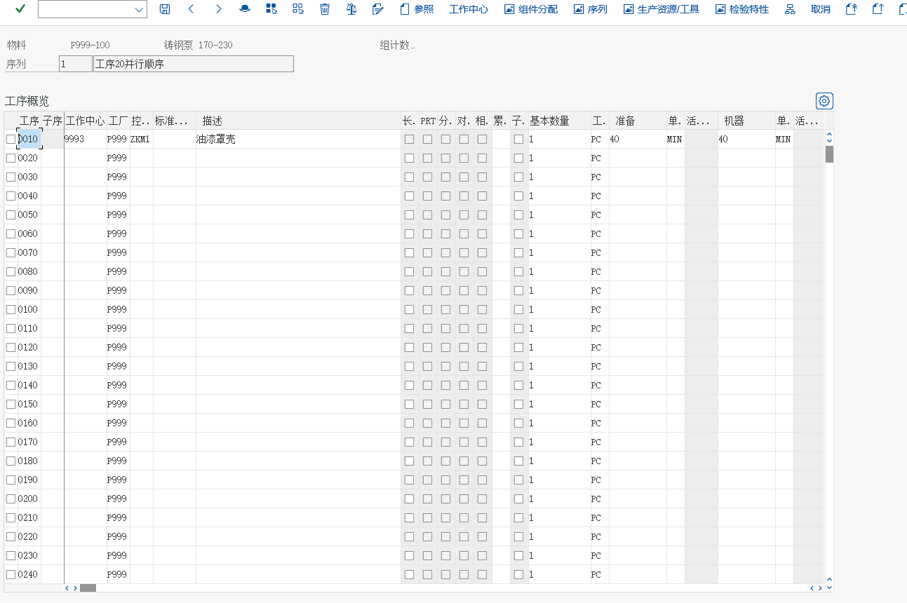
画面 89教材《S4.docx》· PP 任务 15 拆分工序 · 原图 05_1_image873.png 
画面 90教材《S4.docx》· PP 任务 15 拆分工序 · 原图 06_1_image874.jpeg 原书提示在“所需分解”前的方框打勾，保存
| 输入值（教材画面）：字段 | 值 |
|---|---|
| 双击顺序 | 1 |
| 双击工序 | 0010 |
新建产产品的生产计划视图
后勤－生产－主数据－物料主数据－物料－创建（特殊）－MMF1-成品

画面 91教材《S4.docx》· PP 任务 16 新建产产品的生产计划视图 · 原图 01_1_image875.png 解释：MM 中，我们没有维护产成品的生产计划视图。
选择工作计划视图
画面 92教材《S4.docx》· PP 任务 16 新建产产品的生产计划视图 · 原图 02_1_image876.png 
画面 93教材《S4.docx》· PP 任务 16 新建产产品的生产计划视图 · 原图 03_1_image877.png 
画面 94教材《S4.docx》· PP 任务 16 新建产产品的生产计划视图 · 原图 04_1_image878.png
D 产品成本核算配置 5 个任务
标准成本的三块拼图：成本构成结构 Z1、估价变式与日期控制、数量结构控制 PC01，最后组合成一个可用的成本核算变式。没配齐，CK11N 会直接报错。
定义成本构成结构
解释：颐宁公司生产的“铸钢泵 170-230”的 BOM 和工艺路线已经在系统里维护，接下 来我们可以计算该产成品的标准成本了。产品成本是 PP 和 CO 最重要的集成。本步骤我们需要在后台配置和产品成本有关的一个重要参数：“ 成本构成结构”。在成本结构中我们定义颐宁公司的产品成本是如何构成的，各成本构成和成本要素的关系怎样的，并且将成本构成结构分配给工厂
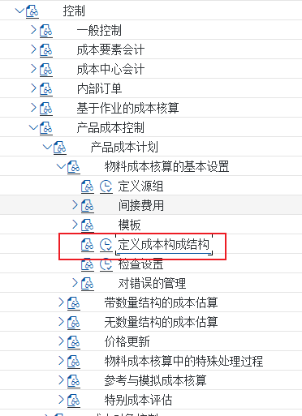
画面 95教材《S4.docx》· PP 任务 17 定义成本构成结构 · 原图 01_1_image879.png 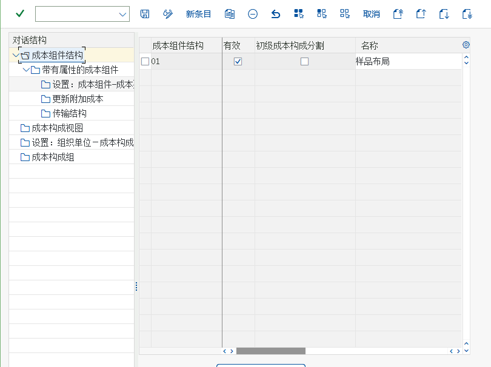
画面 96教材《S4.docx》· PP 任务 17 定义成本构成结构 · 原图 02_1_image880.png 解释：该屏幕的左侧是维护“成本构成结构”参数的各层次。现在我们在最上层，因此屏幕的右侧是目前系统中已经有的成本构成结构的清单。我们要定义一个新的成本构成结构。点击新条目

画面 97教材《S4.docx》· PP 任务 17 定义成本构成结构 · 原图 03_1_image881.png 在弹出框中，点击新条目
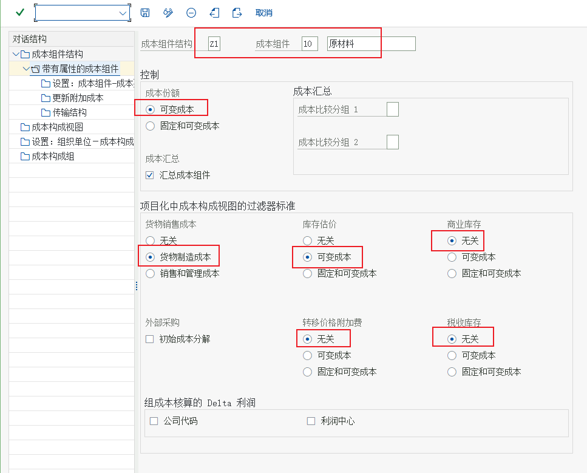
画面 98教材《S4.docx》· PP 任务 17 定义成本构成结构 · 原图 04_1_image882.png 汇总成本组件。指该成本组件的成本将被汇总到更高一层的产品的该成本组件成本中双击左栏“设置-成本组件-成本要素区间”
点击新条目
画面 99教材《S4.docx》· PP 任务 17 定义成本构成结构 · 原图 05_1_image883.png 双击左栏“设置-组织-成本构成格式”

画面 100教材《S4.docx》· PP 任务 17 定义成本构成结构 · 原图 06_1_image884.png 原书提示++++ ++++ ++++ 01.01.2021 Z1 颐宁成本组件结构解释：我们在这里将我们新建的成本构成结构分配给相关的公司代码，工厂，成本核算变式和一定的有效期
按新条目
画面 101教材《S4.docx》· PP 任务 17 定义成本构成结构 · 原图 07_1_image885.png 我们回到成本构成结构定义的最上层，然后激活该成本构成结构，即勾选有效
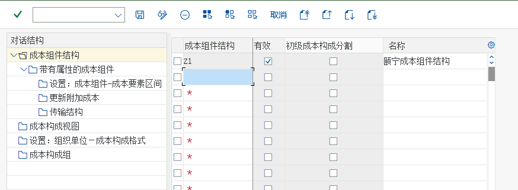
画面 102教材《S4.docx》· PP 任务 17 定义成本构成结构 · 原图 08_1_image886.png 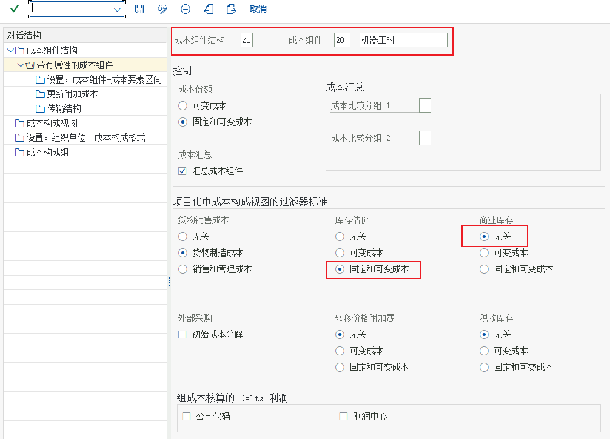
画面 103教材《S4.docx》· PP 任务 17 定义成本构成结构 · 原图 09_1_image887.png 解释，我们刚才只定义了该成本构成结构中的一个成本组件，现在我们接着将机器工时，人工工时和准备工时成本分别定义成三个成本组件
点击新条目
画面 104教材《S4.docx》· PP 任务 17 定义成本构成结构 · 原图 10_1_image888.png 双击左栏“成本组件结构”用同样的办法吧 030，040 设置好。

画面 105教材《S4.docx》· PP 任务 17 定义成本构成结构 · 原图 11_1_image889.png 
画面 106教材《S4.docx》· PP 任务 17 定义成本构成结构 · 原图 12_1_image890.png 
画面 107教材《S4.docx》· PP 任务 17 定义成本构成结构 · 原图 13_1_image891.png 完成后，点击返回，

画面 108教材《S4.docx》· PP 任务 17 定义成本构成结构 · 原图 14_1_image892.png 
画面 109教材《S4.docx》· PP 任务 17 定义成本构成结构 · 原图 14_2_image893.png 双击左栏的“成本组件结构”
将除 Z1 外的成本结构组件的有效勾都去掉，保存。
画面 110教材《S4.docx》· PP 任务 17 定义成本构成结构 · 原图 15_1_image894.png
定义估计变式
控制－产品成本控制－产品成本计划－带数量结构的成本估算－成本核算变式：组件－定义评估变式

画面 111教材《S4.docx》· PP 任务 18 定义估计变式 · 原图 01_1_image895.png 解释：在产品成本核算中，最重要的参数是“成本核算变式”，我们将在 21 学到。成本核算变式又是由定义成本核算不同方面的较小的参数构成的，其中本步骤是与定义物料、作业、外包、外部加工、间接费用等的估价标准相关的，SAP 称之为评估变式

画面 112教材《S4.docx》· PP 任务 18 定义估计变式 · 原图 02_1_image896.png 解释：我们利用系统已经有的估价变式
双击“评估变式：001 ”，进入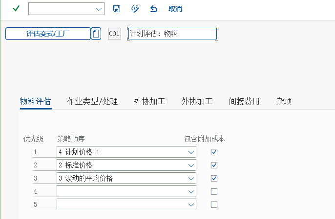
画面 113教材《S4.docx》· PP 任务 18 定义估计变式 · 原图 03_1_image897.png 原书提示估价变式。点击返回键。双击 007，设置如下估价变式 001 是系统预设的物料计划估价变式。我们将在以后的操作中使用 001 作为物料

画面 114教材《S4.docx》· PP 任务 18 定义估计变式 · 原图 04_1_image898.png 007 将被用于订单实际成本的计算中。我们也来查看一下它的配置。点击评估变式/工厂

画面 115教材《S4.docx》· PP 任务 18 定义估计变式 · 原图 05_1_image899.png 原书提示点击新条目
画面 116教材《S4.docx》· PP 任务 18 定义估计变式 · 原图 06_1_image900.png 点击两次返回，然后点击保存
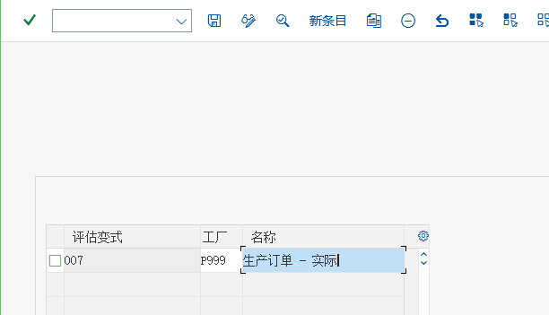
画面 117教材《S4.docx》· PP 任务 18 定义估计变式 · 原图 07_1_image901.png
定义日期控制
解释：日期控制也是成本核算变式中的一个参数。它控制成本核算中和日期相关的内容。后台

画面 118教材《S4.docx》· PP 任务 19 定义日期控制 · 原图 01_1_image902.png 
画面 119教材《S4.docx》· PP 任务 19 定义日期控制 · 原图 02_1_image903.png 点击新条目

画面 120教材《S4.docx》· PP 任务 19 定义日期控制 · 原图 03_1_image904.png
定义数量结构控制
PC01解释：“ 数量结构控制” 也是成本核算变式中的一个参数，在 SAP 中在和产品成本相关的场
合谈到“数量结构”，其实就是指 BOM 和工艺路线，所以数量结构控制主要是控制系统如何选取 BOM 和工艺路线用于成本核算。
画面 121教材《S4.docx》· PP 任务 20 定义数量结构控制 · 原图 01_1_image905.png 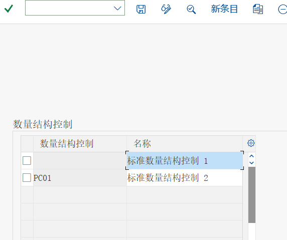
画面 122教材《S4.docx》· PP 任务 20 定义数量结构控制 · 原图 01_2_image906.png 双击 PC01 行

画面 123教材《S4.docx》· PP 任务 20 定义数量结构控制 · 原图 02_1_image909.png 原书提示点击 PC01 左边的新建
画面 124教材《S4.docx》· PP 任务 20 定义数量结构控制 · 原图 03_1_image910.png 
画面 125教材《S4.docx》· PP 任务 20 定义数量结构控制 · 原图 04_1_image911.png 原书提示点击新条目点击路径

画面 126教材《S4.docx》· PP 任务 20 定义数量结构控制 · 原图 05_1_image912.jpeg 原书提示保存
定义成本核算变式
控制－产品成本控制生产－产品成本计划－带数量结构的成本估算－定义成本核算变式
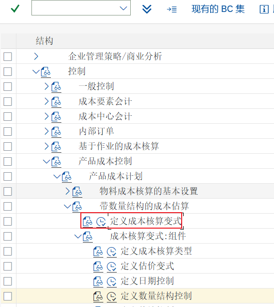
画面 127教材《S4.docx》· PP 任务 21 定义成本核算变式 · 原图 01_1_image913.png 复制 PPC1 并修改

画面 128教材《S4.docx》· PP 任务 21 定义成本核算变式 · 原图 02_1_image914.jpeg 点击更新

画面 129教材《S4.docx》· PP 任务 21 定义成本核算变式 · 原图 03_1_image915.jpeg
E 标准成本估算与价格更新 5 个任务
CK11N 算成本 → CK24 标记未来价格 → CK24 发布更新标准价 → 用 MM03 前后各核对一次。这一组是「事前成本」，也是 PP 与 CO 最直观的集成。
新建产品成本估算
CK11N解释：颐宁公司现在要根据产成品“铸钢泵 170-230”的 BOM 和工艺路线来技术更精确的产品成本，来取代原来在物料主数据中的估算的标准成本。
会计核算－控制－产品成本控制－产品成本计划－物料成本核算－带数量结构的成本核算－CK11N 创建
画面 130教材《S4.docx》· PP 任务 22 新建产品成本估算 · 原图 01_1_image916.png 
画面 131教材《S4.docx》· PP 任务 22 新建产品成本估算 · 原图 01_2_image917.png 
画面 132教材《S4.docx》· PP 任务 22 新建产品成本估算 · 原图 01_3_image918.jpeg 说明注意：核对你的成本计算结果是否和屏幕上的一致，并分析这个结果是怎么产生的，同时将这个结果写下来。解释：这就是该产成品的成本核算。屏幕左边是该产品的组件结构，右侧中部是不同视图的成本。我们主要使用的是“制造成本”。右侧下部是按项目明细的成本明细分析，我们可以看到按各道工序成本累加。我们可以通过相关菜单切换到成本构成分析。
成本核算批量 10PC 是从产成品主数据的成本视图 1 中传递过来的。点击保存出现
画面 133教材《S4.docx》· PP 任务 22 新建产品成本估算 · 原图 02_1_image921.jpeg 
画面 134教材《S4.docx》· PP 任务 22 新建产品成本估算 · 原图 03_1_image922.png 
画面 135教材《S4.docx》· PP 任务 22 新建产品成本估算 · 原图 03_2_image923.png
标记价格
CK24解释：这个步骤 SAP 称为“标记价格”，我们将把前面一个步骤的产成品价格估算“标记”成物料主数据中的“未来价格”

画面 136教材《S4.docx》· PP 任务 23 标记价格 · 原图 01_1_image926.png 点击允许发布

画面 137教材《S4.docx》· PP 任务 23 标记价格 · 原图 02_1_image927.png 
画面 138教材《S4.docx》· PP 任务 23 标记价格 · 原图 02_2_image928.png 
画面 139教材《S4.docx》· PP 任务 23 标记价格 · 原图 02_3_image931.png 点击保存后出现如下页面

画面 140教材《S4.docx》· PP 任务 23 标记价格 · 原图 03_1_image932.png 解释：颐宁公司的账本月被打开，点击退回，点击 F8,如下图，再按返回如下图

画面 141教材《S4.docx》· PP 任务 23 标记价格 · 原图 04_1_image933.png 
画面 142教材《S4.docx》· PP 任务 23 标记价格 · 原图 04_2_image934.png 
画面 143教材《S4.docx》· PP 任务 23 标记价格 · 原图 04_3_image937.png 原书提示此时价格已经更新，
显示产成品的将来计划价格
MM03解释：本步骤中，我们将到铸钢泵 170-230 的主数据中去看价格标记的结果新价格将被更新为将来的计划价格。
后勤－物料管理－物料主数据－物料－显示－MM03-显示当前
画面 144教材《S4.docx》· PP 任务 24 显示产成品的将来计划价格 · 原图 01_1_image938.png 
画面 145教材《S4.docx》· PP 任务 24 显示产成品的将来计划价格 · 原图 02_1_image939.png 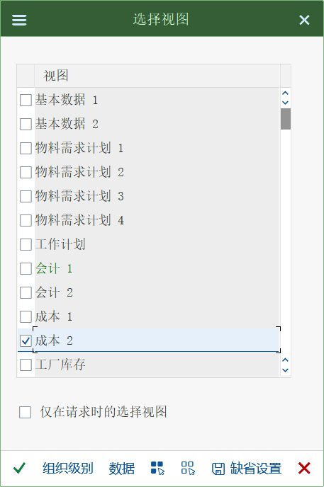
画面 146教材《S4.docx》· PP 任务 24 显示产成品的将来计划价格 · 原图 02_2_image940.png 此处应该显示计划价格 2538.66

画面 147教材《S4.docx》· PP 任务 24 显示产成品的将来计划价格 · 原图 03_1_image943.png
发布价格
CK24解释：此步将未来价格发布，这样系统将更新产成品的标准成本。前台
会计－控制－产品成本控制－产品成本计划－物料成本核算－CK24-价格更新
画面 148教材《S4.docx》· PP 任务 25 发布价格 · 原图 01_1_image944.png 点击发布点击 F8

画面 149教材《S4.docx》· PP 任务 25 发布价格 · 原图 02_1_image945.png 原书提示此页面本来会显示标准价格 3072（本应该是 4440.32 检查）说明解释：如果该产成品有库存存在，系统还会自动生产会计凭证。颐宁公司在系统中现在还没有产成品库存，所以只是更新标准价格。
显示产成品已发布的计划价格
MM03解释：依然到产成品的物料主数据中去查看刚才价格发布的效果。后勤－物料管理－物料主数据－物料－显示－MM03-显示当前

画面 150教材《S4.docx》· PP 任务 26 显示产成品已发布的计划价格 · 原图 01_1_image946.png 
画面 151教材《S4.docx》· PP 任务 26 显示产成品已发布的计划价格 · 原图 01_2_image947.png 
画面 152教材《S4.docx》· PP 任务 26 显示产成品已发布的计划价格 · 原图 02_1_image950.png 
画面 153教材《S4.docx》· PP 任务 26 显示产成品已发布的计划价格 · 原图 03_1_image951.png 应该标准价格会是 4440.32（原因同前步骤）

画面 154教材《S4.docx》· PP 任务 26 显示产成品已发布的计划价格 · 原图 04_1_image952.png 原书提示点击当前，可以看到物料成本估算
画面 155教材《S4.docx》· PP 任务 26 显示产成品已发布的计划价格 · 原图 05_1_image953.png
F 实际成本与可用性检查 6 个任务
为订单的「事后成本」做准备：实际成本估价变式、在制品结果分析版本；再配可用性检查的检查组、检查范围、检查控制；最后用 MM02 维护物料的计划策略组。
定义实际成本核算的估价变式
解释：前面我们计算并发布了产成品的标准成本，在本步骤中我们将为生产订单的实际成本估算分配估价变式。

画面 156教材《S4.docx》· PP 任务 27 定义实际成本核算的估价变式 · 原图 01_1_image954.png 
画面 157教材《S4.docx》· PP 任务 27 定义实际成本核算的估价变式 · 原图 02_1_image955.png 以上是已经分配了生产订单实际成本估价变式的工厂清单，点击新条目

画面 158教材《S4.docx》· PP 任务 27 定义实际成本核算的估价变式 · 原图 03_1_image956.png
定义在制品结果分析版本
解释：在本教程使用的离散式生产模式下，我们按生产订单来管理生产，对于月末未完工的生产订单，系统是将生产订单的实际成本余额转作在制品。同时，我们也可以对在制品进行结果分析来分析到目前位置生产订单的效率，这个概念和 SAP 中项目管理等的结果分析是一致的。在本步骤中我们定义一个简单的在制品结果分析版本。
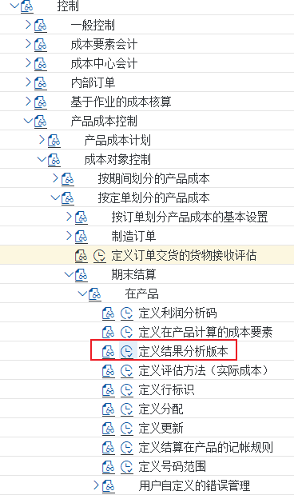
画面 159教材《S4.docx》· PP 任务 28 定义在制品结果分析版本 · 原图 01_1_image957.png 
画面 160教材《S4.docx》· PP 任务 28 定义在制品结果分析版本 · 原图 02_1_image958.png 点击新条目

画面 161教材《S4.docx》· PP 任务 28 定义在制品结果分析版本 · 原图 03_1_image959.png 原书提示选择 C999 进入维护，这里是在产品结果分析的详细屏幕，当中的按钮是可以展开详细维护的。为了简便起见，我们只作简单的维护。
画面 162教材《S4.docx》· PP 任务 28 定义在制品结果分析版本 · 原图 04_1_image960.png
定义可用性检查
生产－商店底价控制－工序－可用性检查－定义检查组
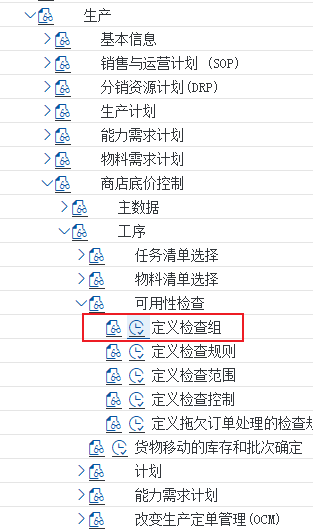
画面 163教材《S4.docx》· PP 任务 29 定义可用性检查 · 原图 01_1_image961.png 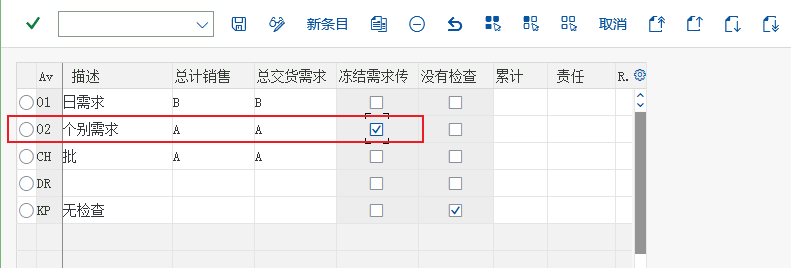
画面 164教材《S4.docx》· PP 任务 29 定义可用性检查 · 原图 01_2_image962.png 原书提示这里我们使用 02，用系统预设的
定义可用性检查范围
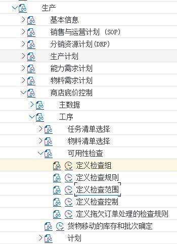
画面 165教材《S4.docx》· PP 任务 30 定义可用性检查范围 · 原图 01_1_image963.png 解释：此步中，我们根据物料主数据中的 “ 可用性检查组” 和生产订单类型中的 “ 检查规则”确定了可用性检查的范围。。
生产－商店底价控制－工序－可用性检查－定义检查范围
画面 166教材《S4.docx》· PP 任务 30 定义可用性检查范围 · 原图 02_1_image964.png 和本教材相关的组合是“02 检查组”和“PP 检查规则”双击

画面 167教材《S4.docx》· PP 任务 30 定义可用性检查范围 · 原图 03_1_image965.png 说明解释：这里定义了哪些库存，哪些向内或向外的物料移动是包含在检查范围内的等等，比如质检库存是包含在可用物料内的，而安全库存是不包含的，等等
定义可用性检查控制
PP01PP02解释：在颐宁公司对于标准生产订单类型 PP01，我们是否需要在订单创建或下达的时候自动检查物料的可用性、PRT（生产资源和工具）的可用性、产能的可用性，以及检查规则等后台

画面 168教材《S4.docx》· PP 任务 31 定义可用性检查控制 · 原图 01_1_image966.png 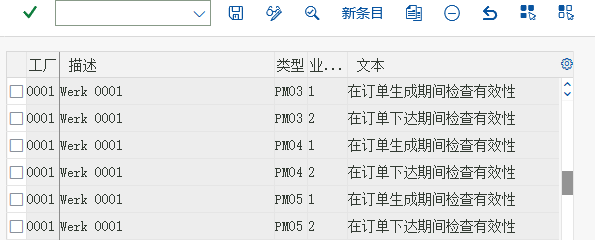
画面 169教材《S4.docx》· PP 任务 31 定义可用性检查控制 · 原图 01_2_image967.png 用复制模板 0001 的方式维护颐宁工厂，选中工厂 0001，类型PP01 、PP02两行复制
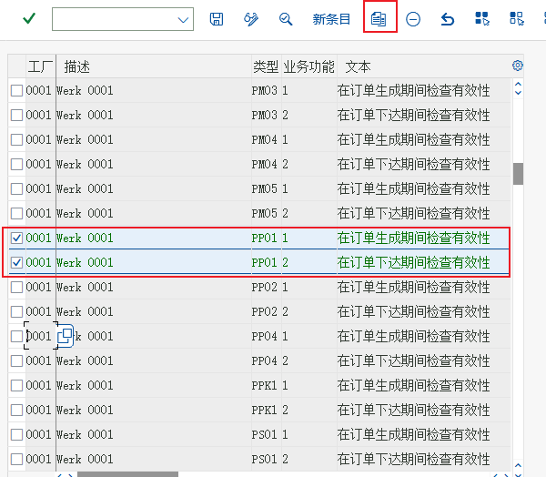
画面 170教材《S4.docx》· PP 任务 31 定义可用性检查控制 · 原图 02_1_image968.png 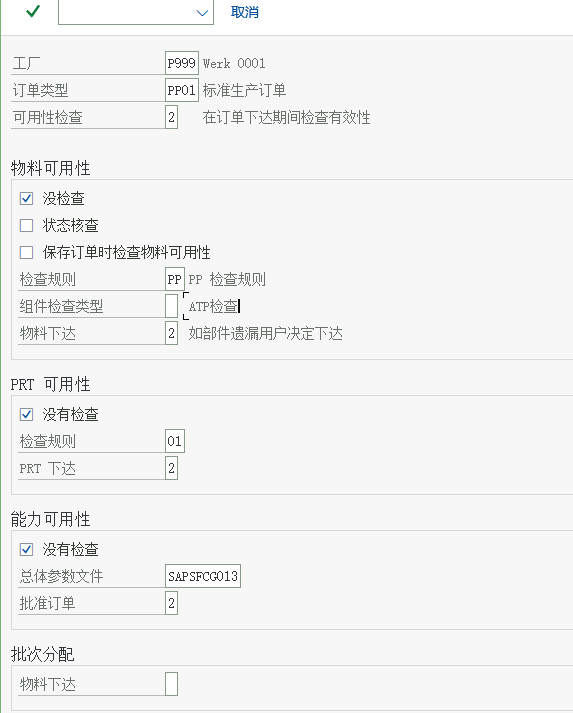
画面 171教材《S4.docx》· PP 任务 31 定义可用性检查控制 · 原图 03_1_image969.png 解释：我们没有在颐宁工厂的标准生产订单 PP01 创建的时候自动检查三种可用性，但是这并不禁止我们手工出发可用性检查

画面 172教材《S4.docx》· PP 任务 31 定义可用性检查控制 · 原图 04_1_image970.png
维护物料主数据的计划策略组
MM02后勤－生产－主数据－物料主数据－更改－MM02-立即

画面 173教材《S4.docx》· PP 任务 32 维护物料主数据的计划策略组 · 原图 01_1_image971.png 
画面 174教材《S4.docx》· PP 任务 32 维护物料主数据的计划策略组 · 原图 02_1_image972.png 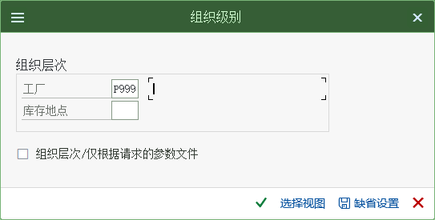
画面 175教材《S4.docx》· PP 任务 32 维护物料主数据的计划策略组 · 原图 03_1_image973.png 
画面 176教材《S4.docx》· PP 任务 32 维护物料主数据的计划策略组 · 原图 04_1_image974.png 原书提示40 首先它是按库存生产的，生产计划的依据是计划部门维护的独立需求计划，但是销售订单对于计划仍然是有影响的，销售订单会消耗独立需求计划。当销售订单消耗完独立需求计划时，多出计划的订单需求将增加生产计划。这种策略在按库存生产（非按单生产的）组装生产中比较多，但是和生产量非常巨大的，同样是按库存生产的日用品又不一样原书提示重复同样的方法，维护 T999-100
G 需求计划与 MRP 运行 7 个任务
业务的起点到转换：MD61 建独立需求 → MD05/MD04 看供需 → MD02 运行 MRP → MD04 里把计划订单转生产订单、采购申请转采购订单 → COOIS 看订单清单。
创建物料的独立需求计划
MD61后勤－生产－生产计划编制－需求管理－已计划的独立需求－MD61-创建

画面 177教材《S4.docx》· PP 任务 33 创建物料的独立需求计划 · 原图 01_1_image975.png 
画面 178教材《S4.docx》· PP 任务 33 创建物料的独立需求计划 · 原图 02_1_image976.png 解释：填写从今天到下月末，创建月的周计划，回车后
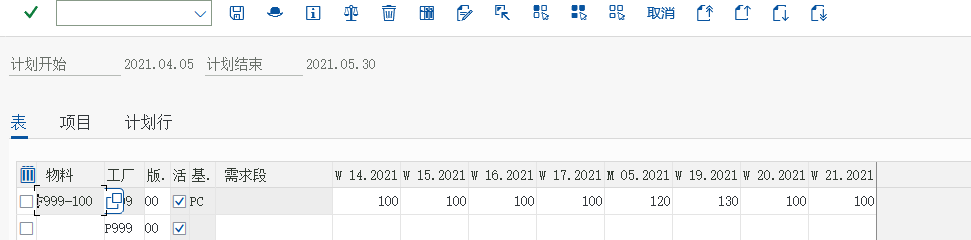
画面 179教材《S4.docx》· PP 任务 33 创建物料的独立需求计划 · 原图 03_1_image977.png 具体数据可自行输入，保存后再输入 T999-100 的周独立需求计划

画面 180教材《S4.docx》· PP 任务 33 创建物料的独立需求计划 · 原图 04_1_image978.png 
画面 181教材《S4.docx》· PP 任务 33 创建物料的独立需求计划 · 原图 05_1_image979.png
显示MRP 清单
MD05解释：在运行 MRP 之前，先让我们来显示一下 MRP 清单。现在显示的是上次 MRP 运行的静态数据。
后勤－生产－物料需求计划－评估－MD05-MRP 清单
画面 182教材《S4.docx》· PP 任务 34 显示MRP 清单 · 原图 01_1_image980.png 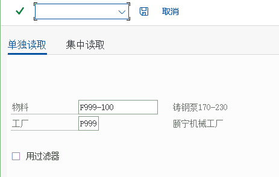
画面 183教材《S4.docx》· PP 任务 34 显示MRP 清单 · 原图 01_2_image981.png 
画面 184教材《S4.docx》· PP 任务 34 显示MRP 清单 · 原图 02_1_image982.png 原书提示由于没有运行 MRP，所以独立需求计划的数据没有传递过来，MRP 清单的数据是静态的，必须要到 MRP 运行后才会发生数值的变化。点击回退显示 T999-100 的MRP 清单此处显示的上次运行 MRP 后的结果，请注意屏幕上方的时间戳。

画面 185教材《S4.docx》· PP 任务 34 显示MRP 清单 · 原图 03_1_image983.jpeg
显示库存/需求清单
MD04后勤－生产－物料需求计划－评估－MD04-库存/需求清单
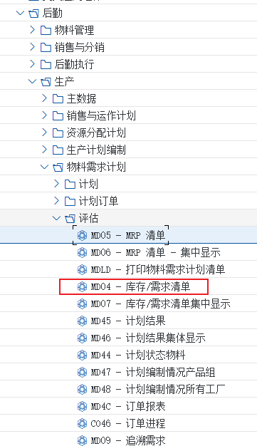
画面 186教材《S4.docx》· PP 任务 35 显示库存/需求清单 · 原图 01_1_image984.png 
画面 187教材《S4.docx》· PP 任务 35 显示库存/需求清单 · 原图 01_2_image985.png 解释：作为比较，我们来显示一下“库存/需求清单”。“ 库存/需求清单”是动态的，它显示的是当前某种物料的需求和供给的情况，并且已经将新创建的独立需求显示出来。
画面 188教材《S4.docx》· PP 任务 35 显示库存/需求清单 · 原图 02_1_image988.png 原书提示切换 F999-100
画面 189教材《S4.docx》· PP 任务 35 显示库存/需求清单 · 原图 03_1_image989.png 说明注意，这里没有时间戳，库存需求清单中已经将独立需求计划的数据传递了过来。库存需求清单是动态变化的。
运行物料需求计划
MD02
画面 190教材《S4.docx》· PP 任务 36 运行物料需求计划 · 原图 01_1_image990.png 
画面 191教材《S4.docx》· PP 任务 36 运行物料需求计划 · 原图 01_2_image991.png 解释：本步骤将由系统自动按照 BOM 来展开物料需求后勤－生产－物料需求计划－计划－MD02-单项，多层

画面 192教材《S4.docx》· PP 任务 36 运行物料需求计划 · 原图 02_1_image992.png 
画面 193教材《S4.docx》· PP 任务 36 运行物料需求计划 · 原图 02_2_image993.png 
画面 194教材《S4.docx》· PP 任务 36 运行物料需求计划 · 原图 03_1_image994.png 双击 F999-100，进入
画面 195教材《S4.docx》· PP 任务 36 运行物料需求计划 · 原图 04_1_image995.png 说明解释：这是产成品铸钢泵 170-230 MRP 运行的结果，我们可以看到对于每一项独立需求都安排了相应的计划订单。同时针对安全库存的旧的计划订单由于开始时间是在过去被修改到可行的时间000000000xx/库存 xx.xx.2021
回退，双击物料 R999-100
画面 196教材《S4.docx》· PP 任务 36 运行物料需求计划 · 原图 05_1_image996.png 原书提示查 看 完 后 ， 在 保 存 前 显 示结 果的 方框 前打 勾， 按回 车键 重新运行 MRP我们可以看到，对于原材料来说，生成了许多非独立需求 DepReq，这些非独立需求是针对产成品 F999-100的 ，这些非独立需求的日期考虑了生产提前期。针对这些需求系统生成了新的计划订单，于此同时，原来的采购申请也被修改了日期。
18.05.2021 PurRqs 0010000020/00010 14.05.2021
画面 197教材《S4.docx》· PP 任务 36 运行物料需求计划 · 原图 06_1_image997.png 
画面 198教材《S4.docx》· PP 任务 36 运行物料需求计划 · 原图 07_1_image998.png 重复上述方法，对 T999-100 运行 MRP
画面 201教材《S4.docx》· PP 任务 36 运行物料需求计划 · 原图 09_1_image1003.png

| 输入值（教材画面）：字段 | 值 |
|---|---|
| 都修改到了 | 15.05.2007 |
将计划订单转换为生产订单
MD04后勤－生产－物料需求计划－评估－MD04-库存/需求清单

画面 202教材《S4.docx》· PP 任务 37 将计划订单转换为生产订单 · 原图 01_1_image1004.png 解释：MRP 运行有两个主要结果：一个是对产成品生成计划订单，另外一个是对原材料产生采购申请。本步骤中我们将产成品的计划订单转换成正式的生产订单。
我们可以在此清单中直接完成转换的操作
画面 203教材《S4.docx》· PP 任务 37 将计划订单转换为生产订单 · 原图 02_1_image1005.png 解释：屏幕中显示的是该计划订单的主要信息，在下方的一排按钮可以执行各种转换操作，我们将该计划订单转换成生产订单，点击生产订单键，点后退

画面 204教材《S4.docx》· PP 任务 37 将计划订单转换为生产订单 · 原图 03_1_image1006.png 画面 205教材《S4.docx》· PP 任务 37 将计划订单转换为生产订单 · 原图 04_1_image1007.png 原书提示点击保存原书提示同样的方法把其他计划订单也转化为生产订单
显示生产订单清单
COOIS解释：这一步我们到信息系统中去查看颐宁公司新的生产订单的清单。前台

画面 206教材《S4.docx》· PP 任务 38 显示生产订单清单 · 原图 01_1_image1008.png 
画面 207教材《S4.docx》· PP 任务 38 显示生产订单清单 · 原图 02_1_image1009.png 
画面 208教材《S4.docx》· PP 任务 38 显示生产订单清单 · 原图 02_2_image1010.png 说明解释：在这里我们看到了生产订单的清单。清单中是生产订单最主要的一些信息。这个清单并不是一个报表，从这个清单我们可以进行很多操作，比如更改生产订单、显示订单、打印生产订单等等。
将采购申请转换为采购订单
MD04解释：此步骤将 MRP 生成的对于原材料的采购申请转换为采购订单。前台
后勤－生产－物料需求计划－评估－MD04-库存/需求清单
画面 209教材《S4.docx》· PP 任务 39 将采购申请转换为采购订单 · 原图 01_1_image1013.png 
画面 210教材《S4.docx》· PP 任务 39 将采购申请转换为采购订单 · 原图 02_1_image1014.png 我们仍然在库存需求清单中完成采购申请的转换

画面 211教材《S4.docx》· PP 任务 39 将采购申请转换为采购订单 · 原图 03_1_image1015.png 原书提示具体位置如下图：可以看到，上步骤转换的生产订单也显示出来了。点击建立订单结构按钮

画面 212教材《S4.docx》· PP 任务 39 将采购申请转换为采购订单 · 原图 04_1_image1016.png 
画面 213教材《S4.docx》· PP 任务 39 将采购申请转换为采购订单 · 原图 05_1_image1017.png 屏幕左侧出现了针对产成品的第一个生产订单 1000000的组建树，右侧依然是产成品的库存需求清单
双击原材料 R999-200，进入画面 214教材《S4.docx》· PP 任务 39 将采购申请转换为采购订单 · 原图 06_1_image1018.png 说明解释：这时，屏幕下侧变成了原材料罩壳的库存需求清单，我们可以看到来自于产成品的非独立需求 DepReq ,随着产成品生产订单的创建转换成了订单预留 OrdRes。现在我们将采购申请转换成采购订单双击采购申请 PurRqs 0010000021/00010，进入

画面 215教材《S4.docx》· PP 任务 39 将采购申请转换为采购订单 · 原图 07_1_image1019.png 点击采购订单，进入

画面 216教材《S4.docx》· PP 任务 39 将采购申请转换为采购订单 · 原图 08_1_image1020.png 原书提示同样通过 MD04 将 R999-200、R999-300、R999-400 和 R999-500 以及贸易商品 T999-100 的R999-500 10000000
T999-100 20000000 PG2
画面 217教材《S4.docx》· PP 任务 39 将采购申请转换为采购订单 · 原图 09_1_image1021.jpeg 
画面 218教材《S4.docx》· PP 任务 39 将采购申请转换为采购订单 · 原图 10_1_image1022.jpeg 
画面 219教材《S4.docx》· PP 任务 39 将采购申请转换为采购订单 · 原图 10_2_image1023.jpeg 
画面 220教材《S4.docx》· PP 任务 39 将采购申请转换为采购订单 · 原图 11_1_image1024.jpeg 
画面 221教材《S4.docx》· PP 任务 39 将采购申请转换为采购订单 · 原图 12_1_image1025.jpeg
H 生产执行、采购收货与结算 12 个任务
一遍完整的生产：采购收货 → 发票校验（含 MRBR 下达）→ 下达生产订单 → 发料 261 → 工单确认 → 产成品收货 → 看订单成本 → 技术性完成 → KO88 结算 → 成本报表 → MD04 复核库存 → MB1B 移库。
对采购订单收货
MIGO
输入采购发票
MIROMRBR解释：这一步我们为前面的采购订单输入采购发票，并执行发票校验。前台
后勤－物料管理－后勤发票校验－凭证输入－MIRO-输入发票
画面 224教材《S4.docx》· PP 任务 41 输入采购发票 · 原图 01_1_image1028.png 
画面 225教材《S4.docx》· PP 任务 41 输入采购发票 · 原图 02_1_image1029.png 
画面 226教材《S4.docx》· PP 任务 41 输入采购发票 · 原图 03_1_image1030.png 重复同样的办法，对所有前面的采购订单进行发票预制运行事务代码 MRBR 下达冻结发票
画面 227教材《S4.docx》· PP 任务 41 输入采购发票 · 原图 04_1_image1031.jpeg 点击批准发票 F9（绿色小旗帜）
画面 228教材《S4.docx》· PP 任务 41 输入采购发票 · 原图 05_1_image1032.png
下达生产订单
CO02后勤－生产－生产控制－订单－CO02-更改

画面 229教材《S4.docx》· PP 任务 42 下达生产订单 · 原图 01_1_image1033.png 解释：和内部订单类似生产订单也是采用 “ 状态管理” 的，前面创建的生产订单还不能执行，只有在我们将它下达后，它才能被执行

画面 230教材《S4.docx》· PP 任务 42 下达生产订单 · 原图 02_1_image1034.png 
画面 231教材《S4.docx》· PP 任务 42 下达生产订单 · 原图 03_1_image1035.png 原书提示在收货页，要把收货勾上勾点击屏幕上方的状态，行显示了这张生产订单目前的状态，可以点击旁边的 i 按钮查看其状态 点击绿色旗帜下达生产订单，屏幕下方出现提示，下达已执行，点击保存，使用同样的方法下达其他生产订单

画面 232教材《S4.docx》· PP 任务 42 下达生产订单 · 原图 04_1_image1036.png 
画面 233教材《S4.docx》· PP 任务 42 下达生产订单 · 原图 04_2_image1037.png 
画面 234教材《S4.docx》· PP 任务 42 下达生产订单 · 原图 05_1_image1038.png
对生产订单发货
解释：产成品铸钢泵 170-230 的生产订单下达后就可以开始生产订单的执行，本步骤我们给生产订单发原材料。
后勤－物料管理－库存管理－货物移动－MB1A-发货
画面 235教材《S4.docx》· PP 任务 43 对生产订单发货 · 原图 01_1_image1039.png 回车

画面 236教材《S4.docx》· PP 任务 43 对生产订单发货 · 原图 02_1_image1040.png 点击到订单，输入生产订单号及工厂

画面 237教材《S4.docx》· PP 任务 43 对生产订单发货 · 原图 03_1_image1041.png 系统自动将订单中尚未发货的物料复制过来，点击保存

画面 238教材《S4.docx》· PP 任务 43 对生产订单发货 · 原图 04_1_image1042.png 点击发货菜单---显示

画面 239教材《S4.docx》· PP 任务 43 对生产订单发货 · 原图 05_1_image1043.png 回车后看到

画面 240教材《S4.docx》· PP 任务 43 对生产订单发货 · 原图 06_1_image1044.png 原书提示点击会计凭证
画面 241教材《S4.docx》· PP 任务 43 对生产订单发货 · 原图 07_1_image1045.png 双击会计凭证，如下

画面 242教材《S4.docx》· PP 任务 43 对生产订单发货 · 原图 08_1_image1046.png 原书提示退回，重复同样的办法，对其余已经下达的生产订单发货
工单确认
CO11N解释：本步骤是生产订单的执行过程，对于已经完成的各道工序进行逐个的确认和报工，我们称之为工票确认或计工单。

画面 243教材《S4.docx》· PP 任务 44 工单确认 · 原图 01_1_image1047.png 按回车

画面 244教材《S4.docx》· PP 任务 44 工单确认 · 原图 02_1_image1048.png 点击货物移动

画面 245教材《S4.docx》· PP 任务 44 工单确认 · 原图 03_1_image1049.png 点击回车后，如下所示

画面 246教材《S4.docx》· PP 任务 44 工单确认 · 原图 04_1_image1050.png 
画面 247教材《S4.docx》· PP 任务 44 工单确认 · 原图 04_2_image1051.png 这里我们看到产成品尚未完工收获，点击保存按钮，继续对其他工序进行确认，这次我们选择并行的工序，油漆罩壳
点击货物移动，单击保存
画面 248教材《S4.docx》· PP 任务 44 工单确认 · 原图 05_1_image1052.png 原书提示重复上述办法，对工序 20、30、40 和 50 进行报工。产成品 F999-100 共有六道工序，分别为 10、20、30、40、50 出对工序已经改动了计划人工工时外，其余都保留系统自动带出的计划值。
画面 249教材《S4.docx》· PP 任务 44 工单确认 · 原图 06_1_image1053.png 
画面 250教材《S4.docx》· PP 任务 44 工单确认 · 原图 07_1_image1054.png 
画面 251教材《S4.docx》· PP 任务 44 工单确认 · 原图 07_2_image1055.png 
画面 252教材《S4.docx》· PP 任务 44 工单确认 · 原图 08_1_image1056.png
对生产订单收货
MIGO解释：产品铸钢泵 170-230 的生产经过各道工序的加工后正式完工，本步骤进行订单完工收货

画面 253教材《S4.docx》· PP 任务 45 对生产订单收货 · 原图 01_1_image1057.png 
画面 254教材《S4.docx》· PP 任务 45 对生产订单收货 · 原图 02_1_image1058.png 原书提示这个屏幕和采购收货类似，只是我们只需要填写的是生产订单(1000013)的编号。（记得在订单上收货页把收货的勾勾上）
显示生产订单的成本
CO03
画面 255教材《S4.docx》· PP 任务 46 显示生产订单的成本 · 原图 01_1_image1059.png 
画面 256教材《S4.docx》· PP 任务 46 显示生产订单的成本 · 原图 02_1_image1060.png 
画面 257教材《S4.docx》· PP 任务 46 显示生产订单的成本 · 原图 02_2_image1061.jpeg
对生产订单技术性完成
CO02解释：生产订单有四种系统标准状：创建、下达、技术性完成和关闭。当生产订单和生产相关的各项操作完成后应该将生产订单作技术性完成，但是这时候我们仍然可以做诸如订单结算等特殊的操作，当所有的操作都完成后，我们才将订单关闭。
后勤－生产－生产控制－订单－CO02-更改
画面 258教材《S4.docx》· PP 任务 47 对生产订单技术性完成 · 原图 01_1_image1064.png 原书提示查看状态
画面 259教材《S4.docx》· PP 任务 47 对生产订单技术性完成 · 原图 02_1_image1065.png
生产订单差异结算
KO88解释：46 的时候我们发现该生产订单的实际成本中有余额，这就意味着投入高过产出，我们称之为生产订单的差异，从会计角度来讲，生产订单差异需要做结算。
会计－控制－产品成本控制－成本对象控制－按订单划分的产品成本－期末结算－单一功能－KO88 单个处理
画面 260教材《S4.docx》· PP 任务 48 生产订单差异结算 · 原图 01_1_image1066.png 
画面 261教材《S4.docx》· PP 任务 48 生产订单差异结算 · 原图 02_1_image1067.png
生产订单成本报表显示
会计－控制－产品成本控制－成本对象控制－按订单划分的产品成本－信息系统－按订单的产品成本报表－详细的报表－KKBC_ORD-用于订单

画面 262教材《S4.docx》· PP 任务 49 生产订单成本报表显示 · 原图 01_1_image1068.png 
画面 263教材《S4.docx》· PP 任务 49 生产订单成本报表显示 · 原图 01_2_image1069.jpeg 说明解释：这一步我们到信息系统中去查看生产订单的成本报表前台
显示库存清单
MD04后勤－生产－物料需求计划－评估－MD04 库存需求清单
解释：完成了生产，查看一下库存需求清单，来看看产成品的需求和供给的平衡状态。前台

画面 266教材《S4.docx》· PP 任务 50 显示库存清单 · 原图 02_1_image1072.png 
画面 267教材《S4.docx》· PP 任务 50 显示库存清单 · 原图 03_1_image1073.png 同样的方法，查看 T999-100

画面 268教材《S4.docx》· PP 任务 50 显示库存清单 · 原图 04_1_image1074.png T999-100 全在 0003 运输库中

画面 269教材《S4.docx》· PP 任务 50 显示库存清单 · 原图 05_1_image1075.png
| 输入值（教材画面）：字段 | 值 |
|---|---|
| 双击 | Stock |

{kind=link}
{kind=link}
{kind=link}
{kind=link}
{kind=link}
{kind=link}
{kind=link}
{kind=link}
{kind=link}
{kind=link}
{kind=link}
{kind=link}
{kind=link}
{kind=link}
{kind=link}
{kind=link}
{kind=link}
{kind=link}
{kind=link}
{kind=link}
{kind=link}
{kind=link}
{kind=link}
{kind=link}
{kind=link}
{kind=link}
{kind=link}
{kind=link}
{kind=link}
{kind=link}
{kind=link}
{kind=link}
{kind=link}
{kind=link}
{kind=link}
{kind=link}
{kind=link}
{kind=link}
{kind=link}
{kind=link}
{kind=link}
{kind=link}
{kind=link}
{kind=link}
{kind=link}
{kind=link}
{kind=link}
{kind=link}
{kind=link}
{kind=link}
{kind=link}
{kind=link}
{kind=link}
{kind=link}
{kind=link}
{kind=link}
{kind=link}
{kind=link}
{kind=link}
{kind=link}
{kind=link}
{kind=link}